About Me
My name is Jessica, but I'd love it if you'd call me Jess - I'm a full stack developer from the GTA.
I'm passionate about learning new skills, and always on the lookout for my next creative outlet. With a background in marketing, I'm driven in my work to make strategic and creative processes come together to create a powerful end product.
ResumeCore Skills
Development
HTML
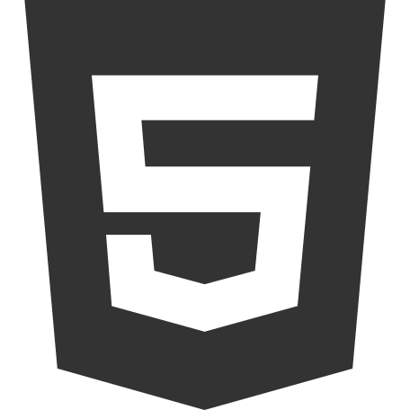CSS
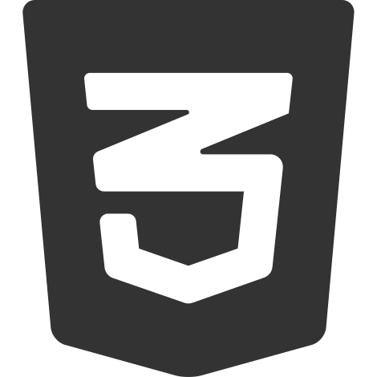Sass
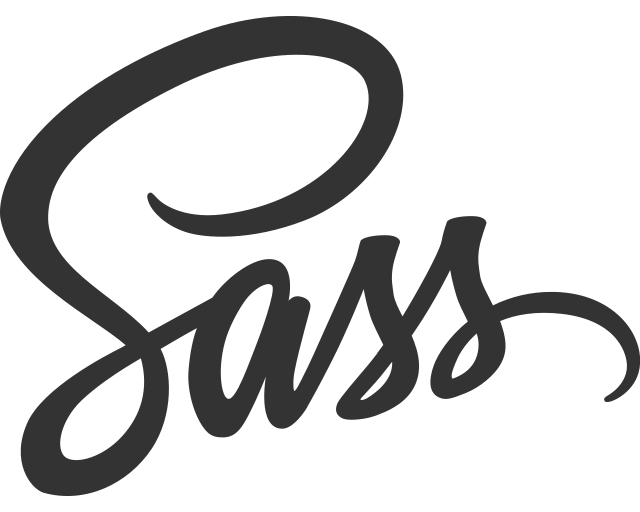JavaScript
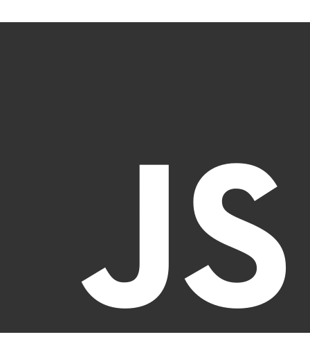React
Python
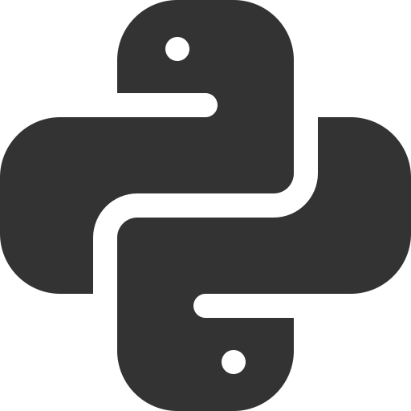Django
PostGresql
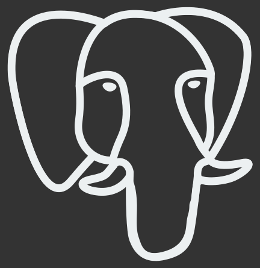Git
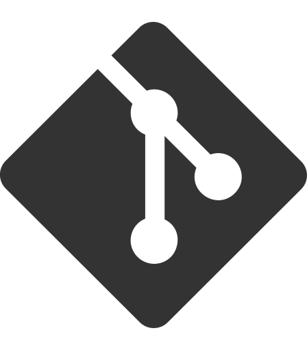
Design
Illustrator
Photoshop
InDesign
Projects
- 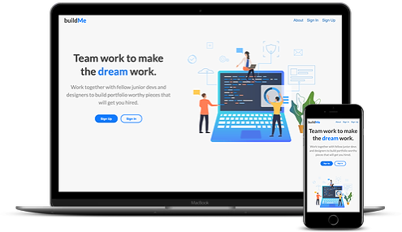
buildme
React / Redux / JavaScript / Sass / Django REST Framework Api / PostgreSQL
A web application where junior developers and designers can collaborate with one another in order to build an impressive portfolio. Users can view, post, find and apply to projects in order to connect with other users. This full stack application was built with a React front end which makes API requests to the Django back end. A collaboration with Alex Yang and Timur Kurbanov.
GitHub - 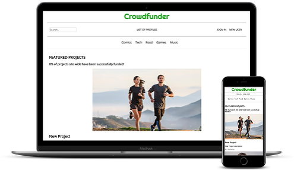
Crowdfunder
Python / Django / Sqlite / Css
A backend clone of Kick starter using Django. As a team, we were tasked with managing and prioritizing user stories to complete a viable product within a short period of time. This project required agile development and team coding with GitHub. A collaboration with Alex Yang and Timur Kurbanov.
GitHub - 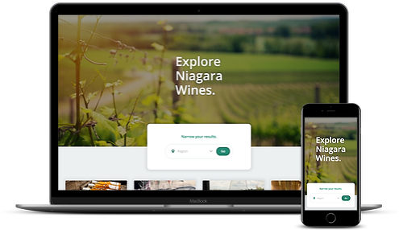
Niagara Wineries
JavaScript / React / Sass / Yelp Fusion Api
A work in projgress - Niagara Wineries is a front-end React app that makes calls to Yelp's Fusion api in order to display the local wineries in Niagara. Users can filter results to specific regions of Niagara such as Niagara-On-The-Lake or Beamsville. After completing the winery details aspect, I plan to incorperate a backend so users can save wineries they would like to visit, or wineries they enjoyed.
Check it out live as I work on it!
Live GitHub - 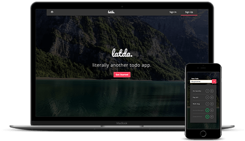
Literally Another ToDo App (LATDA)
JavaScript / React / Axios / Sass / Django Rest Framework / JWT Authentication
A simple, minimalist todo app - latda was built with the sole intention of practicing building a full stack web application that required user authentication. A particular challenge I faced was how to handle refreshing the short-lived access token without interrupting the users experience, or ability to post or update todos if they had been inactive for a few minutes.
Live GitHub